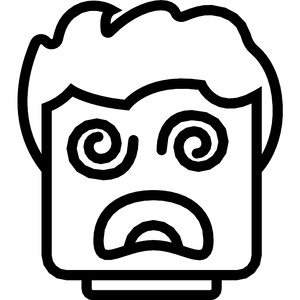
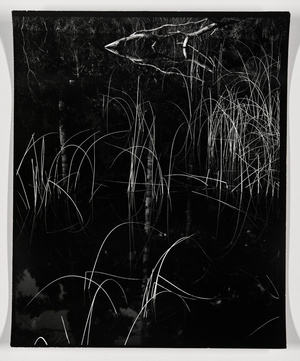

(verb)
intr:
― be obscured, dazed, stupefied
― wander, sway owing to stupefaction
tr: S,A, daze, bemuse [κατεχειν]
― be obscured, dazed, stupefied
― wander, sway owing to stupefaction
tr: S,A, daze, bemuse [κατεχειν]


1: be dazed, 2: be stupefied, 3: wander, sway (due to stupefaction), 4: be obscured
complete++
| intr:6315 | Crum: 356a | ||||||||
| With following preposition:6316 | |||||||||
| c ⲉϫⲛ- S | 6317 | ||||||||
| c ϩⲁ- S | 6318 | ||||||||
| c ϩⲛ- SAB | 6319 | ||||||||
| ― S | (noun male)stupefaction
error, straying1932 |
||||||||
See also:
Homonyms:
| view | ⲉⲓⲱⲣⲙ, ⲓⲱⲣⲙ S ⲓⲱⲣⲉⲙ BF ⲉⲓⲱⲣⲙⲉ NH ⲉⲓⲟⲣⲙ† S ⲉⲓⲁⲣⲙ† AF ⲓⲟⲣⲉⲙ† B | (verb) intr: stare, be astonished, dumbfounded [εξισταναι]237 |
| view | ⲑⲱⲃϣ, ⲑⲱϣⲡ B | (verb) intr: be astonished, stare with astonishment2773 |
| view | ⲑⲱⲣϣ B | (verb) intr: stare in astonishment (?)2785 |
| view | ⲱⲛϣ S ⲱⲱⲛϣ L ⲟⲛϣ† SB ⲟⲟⲛϣ† S ⲁⲛϣ(ⲉ)† Sf ⲁⲛⳉ† A ⲁⲁⲛϣ† L | (verb) intr: be astonished, dazed & so dumb1817 |
| view | ⲧⲱⲙⲧ B ⲧⲱⲙⲛⲧ S ⲧⲟⲙⲧ† B | (verb) intr: be amazed, stupefied [εξισταναι]1601 |
| view | ⲥⲱⲣⲙ S ⲥⲱⲣⲙⲉ A ⲥⲱⲣⲉⲙ BF ⲥⲉⲣⲙ- S ⲥⲁⲣⲙⲉ- L ⲥⲉⲣⲉⲙ- B ⲥⲟⲣⲙ⸗ SLB ⲥⲁⲣⲙ⸗ A ⲥⲟⲣⲙ† S ⲥⲁⲣⲙⲉ† AL ⲥⲟⲣⲉⲙ† B ⲥⲁⲣⲉⲙ† F p c ⲥⲁⲣⲙ- S | (verb) intr: go astray, err, be lost [πλαναν, απολλυσθαι, εκλυεσθαι]
tr: lead astray, lose345 |
| view | ⲥⲛⲁⲉⲓⲛ S ⲥⲛⲏⲓⲛⲓ B | (verb) intr: skip, stroll, wander [σκιρταν, αδολεσχειν]
as nn m B, swaying gait1440 |
| view | ⲗⲉⲗⲉ B | (verb) intr: wander about2915 |
| view | ϣⲉⲉⲓ SA | (verb) intr: go & come (ϣⲉ + ⲉⲓ), be carried to & fro, wander
as nn, going to & fro, derangement, madness [περιφορα, περιφερεια]280 |
| view | ⲕⲱⲧⲉ SALO ⲕⲱϯ BF ⲕⲟϯ O ⲕⲉⲧ- SB ⲕⲁⲧ- F ⲕⲟⲧ⸗ SB ⲕⲁⲧ⸗ ALF ⲕⲏⲧ† S | (verb) intr:
― turn, go round [κυκλουν, στρεφεσθαι] ― go round with waterwheel, water ― form circle ― wander, stray ― go about seeking, seek qual: S (archaic) turned iteration S,B continue to turn, seek tr: ― turn, often of face ― surround refl (oftenest) with suff or ⲙⲙⲟ⸗, turn self, return, repeat [στρεφεσθαι]102 |
Homonyms:
| view | (ⲥⲣⲟⲙⲣⲉⲙ), ⲥⲣⲉⲙⲣⲱⲙ⸗ B | (verb) tr (refl ?): enforce, admonish [εμβριμασθαι]1467 |